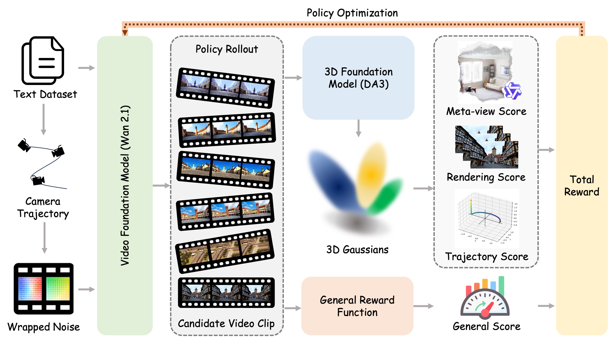
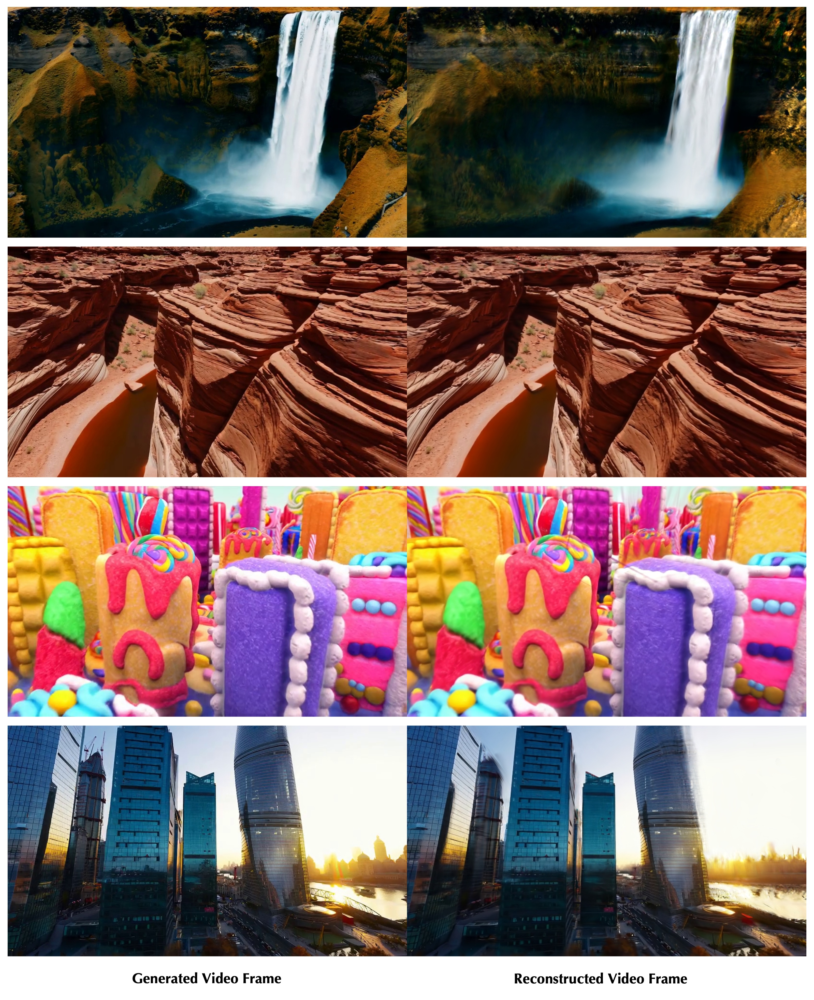
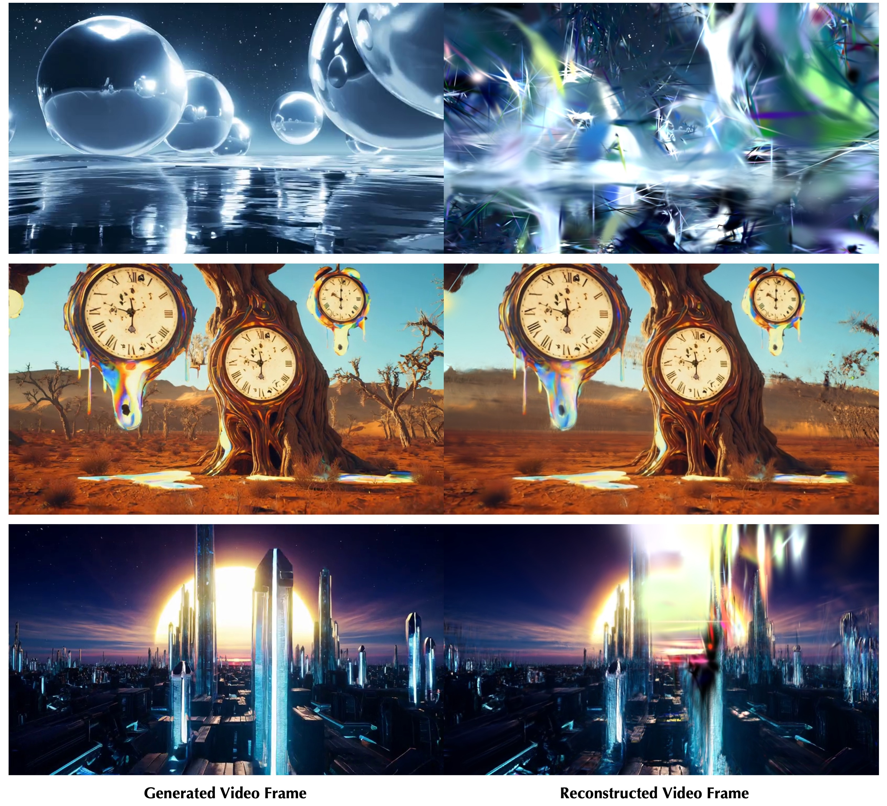
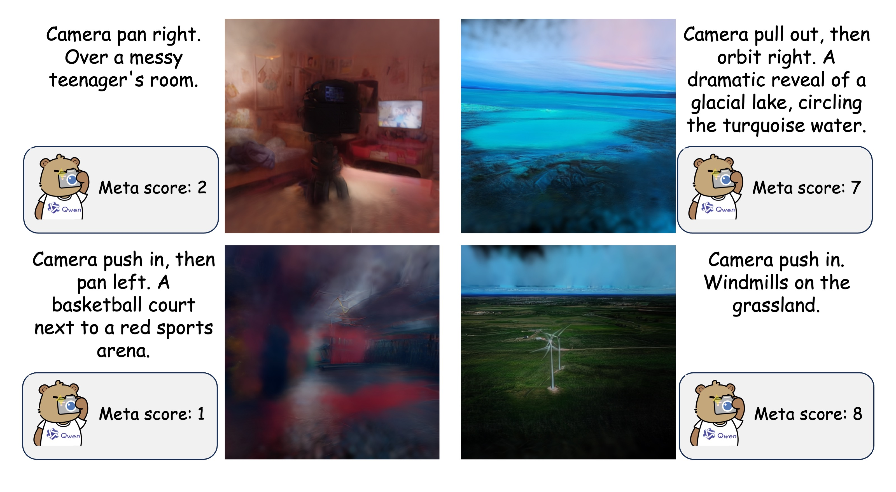
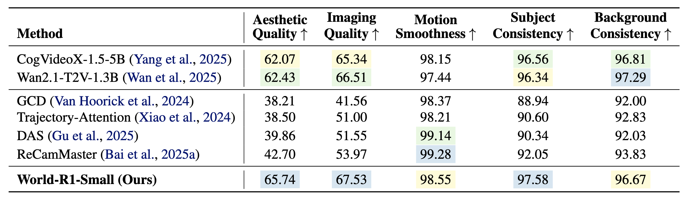
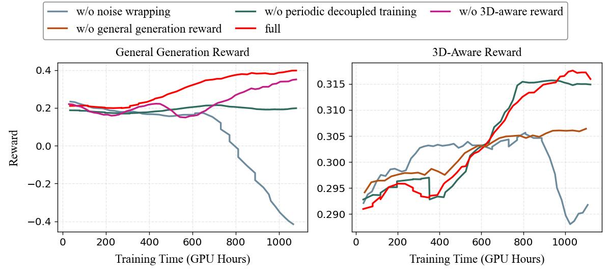

Training Data
~3,000
Pure-text world-simulation prompts
Technical Details
1 Zhejiang University 2 Microsoft Research 3 Independent Researcher
World-R1 aligns text-to-video generation with 3D constraints through reinforcement learning, without changing the base architecture or adding inference-time 3D control modules.
Training Data
~3,000
Pure-text world-simulation prompts
Dynamic Subset
~500
High-entropy motion prompts
3D Consistency
27.67
Best PSNR from World-R1-Large
MVCS
0.993
Reconstruction-independent consistency
User Preference
86%
Overall win rate over Wan2.1
Backbones
1.3B / 14B
Wan2.1 variants trained on 48 / 96 H200 GPUs
01
Recent video foundation models demonstrate impressive visual synthesis but frequently suffer from geometric inconsistencies. While existing methods attempt to inject 3D priors via architectural modifications, they often incur high computational costs and limit scalability. We propose World-R1, a framework that aligns video generation with 3D constraints through reinforcement learning. To facilitate this alignment, we introduce a specialized pure text dataset tailored for world simulation. Utilizing Flow-GRPO, we optimize the model using feedback from pre-trained 3D foundation models and vision-language models to enforce structural coherence without altering the underlying architecture. We further employ a periodic decoupled training strategy to balance rigid geometric consistency with dynamic scene fluidity. Extensive evaluations reveal that our approach significantly enhances 3D consistency while preserving the original visual quality of the foundation model, effectively bridging the gap between video generation and scalable world simulation.
02

03
Prompt-specified push, pull, pan, move, and orbit motions are converted into camera trajectories and written into the initial noise through trajectory-guided wrapping.
Depth Anything 3 reconstructs generated clips as 3DGS; Qwen3-VL evaluates meta-views, LPIPS measures re-rendering fidelity, and trajectory scores check camera control.
HPSv3 scores the generated frames so RL alignment improves geometry without sacrificing aesthetic quality, subject consistency, and motion smoothness.
Every 100 steps, the 3D-aware reward is temporarily disabled and the model is optimized on roughly 500 high-entropy dynamic prompts with the general reward only.
04



05
06



3D Reconstruction
World-R1-Large substantially improves geometry consistency over Wan2.1-T2V-14B.
Small Variant
World-R1-Small reaches 27.63 PSNR and 0.858 SSIM on the 3D consistency benchmark.
VBench
The RL-aligned model preserves general video quality while improving subject consistency to 97.58.
07
User Study
25 participants compared World-R1 with Wan2.1 on 30 complex prompts in a blind 2AFC setup.
Metric Validation
Human 3D-consistency preference aligns with the automatic metric ranking across 20 participants and 30 randomized pairs.
Long Video
World-R1-Large improves long-video PSNR from 18.32 to 26.32 against the Wan2.1-T2V-14B backbone.
08
World-R1 vs baseline models on representative prompts.